Jeu de Paume
The earliest traces of tennis date back to antiquity, though this
isn’t certain. So let’s begin our journey to understand this game
in the XII century. At this time in France, monarchs invented and
began playing a game called jeu de paume, which translates
to “palm game”. The daring French played with a wooden ball.
Painful? Definitely — but they soon realized it too, inventing a
special glove, then a contraption resembling a racket, and later,
a ball made from cellulose for greater maneuverability.
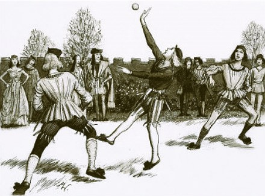
Before the XIII century, jeu de paume didn’t lead to
fatalities. However, in 1316, King Louis X became the first to die
after playing it. This didn’t dampen the game’s popularity. On the
contrary, jeu de paume became even more famous, spreading
across Europe during the XIV century to royal courts and monasteries
alike, despite the Catholic Church’s bans.
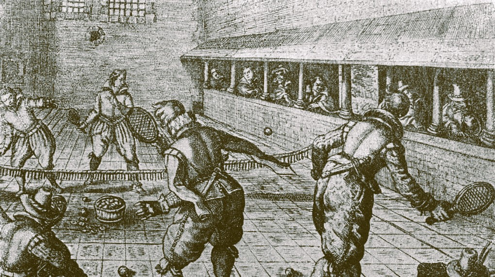
The Transformation to Tennis
Around this time, the world first heard a word resembling “tennis”. During
games, French players would shout “tenez”, meaning “hold”. This
exclamation served as a warning before serving the ball. This marked the
beginning of the transformation of jeu de paume into “real tennis”,
also known as “royal tennis” or “court tennis.”
In the 1530s, King Henry VIII built a tennis court at Hampton Court Palace,
and in Italy in 1583, the first prototype of the modern tennis racket
appeared. Over the next few centuries, “real tennis” became the pastime of
royal families and aristocrats.
The Birth of the Modern Scoring System
This period also birthed the famously illogical scoring system. In football,
a goal always equals one point. In basketball, free throws are worth one
point, field goals inside the three-point line are worth two, and shots
beyond it are worth three.
But what’s with tennis scoring? Why is it so strange?
There are four theories, but let’s focus on the two most plausible ones.
The Clock Face Theory
Early scoreboards used clock
dials, with the hands moving for each point: first to 15, then 30, then
45. Eventually, 45 became 40 for simplicity in reflecting deuce (40 – 40).
When a player had the advantage, the hand moved to 50, and with the
game’s conclusion, it returned to the top — 60.
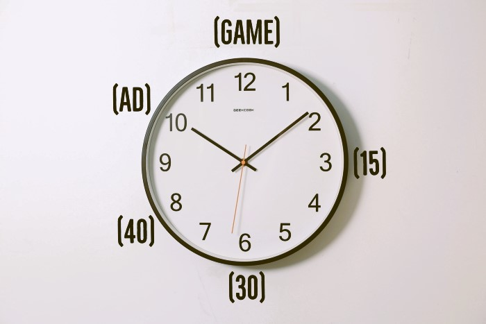
The Court Size Theory
The traditional court size of
jeu de paume was 90 feet (27 meters) long, divided by a net
into two equal sections of 45 feet (about 14 meters) each. Each point
allowed the server to move 15 feet forward, then another 15, and
finally 10 more feet closer to the net, where they often secured
the point and won the game.
Neither theory can be definitively proven, so you’re free to choose the
one you prefer.
The Use of “Love” Instead of “Zero”
The quirks of scoring don’t stop there. What about the use of “love”
instead of “zero”?
- The most common explanation is that the term comes from the French
word œuf, meaning “egg”. Since an egg resembles the number
zero, it became “love.”
- Another theory traces it to the Dutch word lof, meaning
“honor” or “virtue.”
- A third version suggests that before the game begins, players have
love and respect for one another.
- A fourth theory similarly posits that a player with zero points
still retains a love for the game.
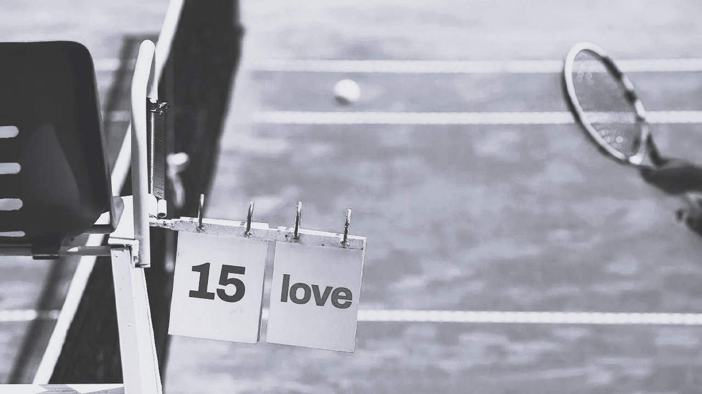
The Emergence of Modern Tennis
With that dive into the history of tennis and its peculiar scoring,
it’s time to learn how modern tennis came to be.
In the mid-19th century, as the popularity of “real tennis” waned,
British Army Major Walter Wingfield stepped in. He combined the rules
and equipment of earlier tennis games into a boxed set. Wingfield
marketed it to wealthy Victorians, who embraced it on their manicured
lawns, which were otherwise rarely used beyond casual strolls.
He called his invention sphairistike, from the Greek word for
a ball game. While the name didn’t stick, his explanation of “lawn tennis” did.
The impact was remarkable.
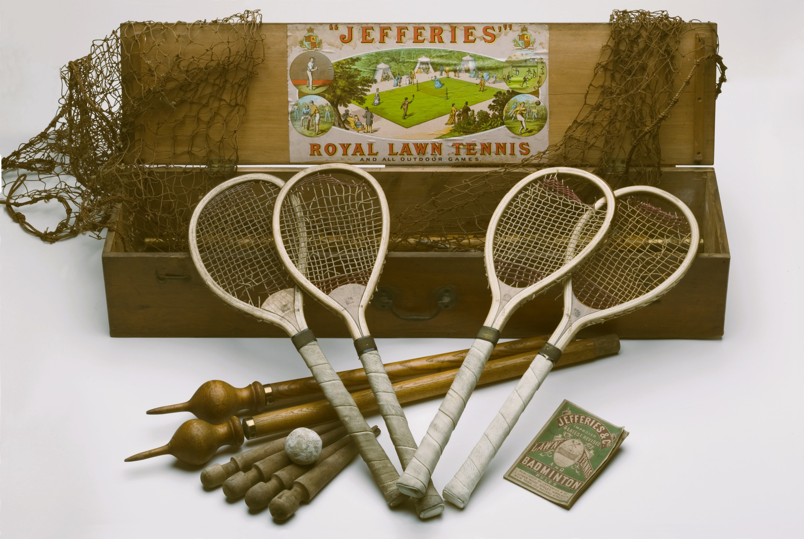
The Growth of Tennis
By 1877, the first Wimbledon tournament was held.
In 1881 came the first U.S. Championship, followed by the French
Championship in 1891 and the Australian Championship in 1905.
Forty years after Wingfield sold his sets, tennis was thriving in
over 20 countries, with Grand Slam tournaments and the Davis Cup
well established.
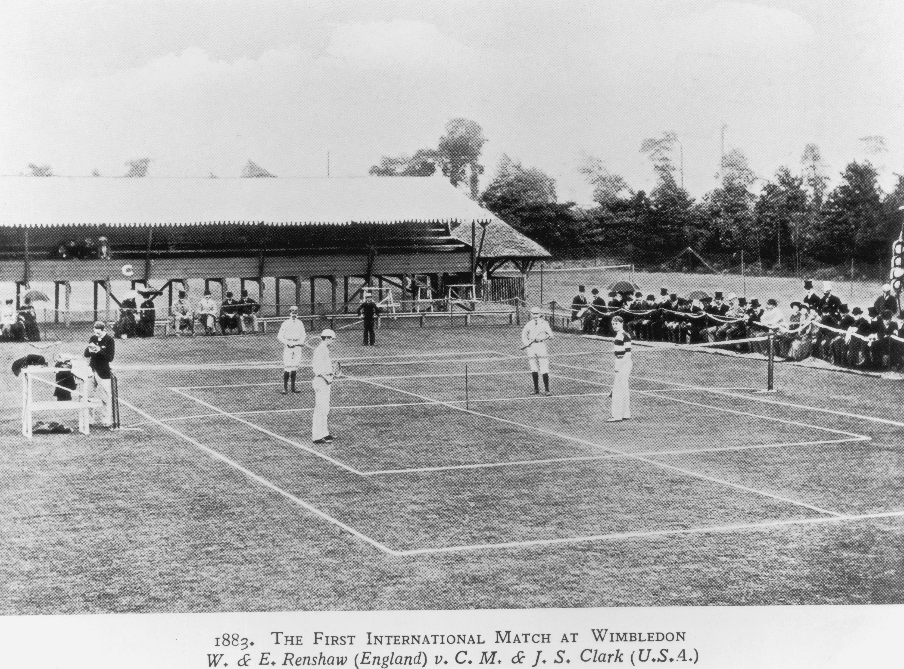
Post-War Tennis and Challenges
After World War I, tennis flourished, thanks to charismatic stars
like Bill Tilden, Suzanne Lenglen, René Lacoste, Fred Perry, and
others.
Yet, challenges arose. Tennis traditionalists viewed the sport
as strictly amateur, while top players sought to earn a living,
often turning professional. This divided the tennis world into
amateurs competing in traditional tournaments and former champions
showcasing their skills in paid exhibitions.
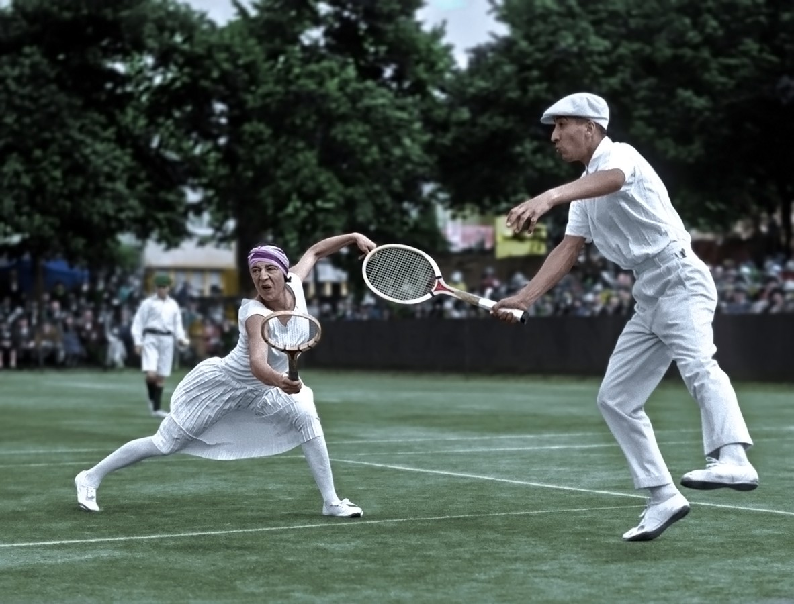
The Open Era
In 1967, everything changed when Wimbledon, the bastion of tradition,
declared: “If we want to honor the best players in the world, we must
let them play in the most prestigious tournaments.”
Thus began the Open Era of tennis. Within months, amateur and
professional tours merged.
The first Grand Slam tournament of the Open Era, held in Paris in
1968, heralded a tennis boom.
Grass and clay courts were soon joined by carpet and synthetic
surfaces. Traditional white attire gave way to colorful clothing,
while advancements in technology and materials left wooden rackets
behind.
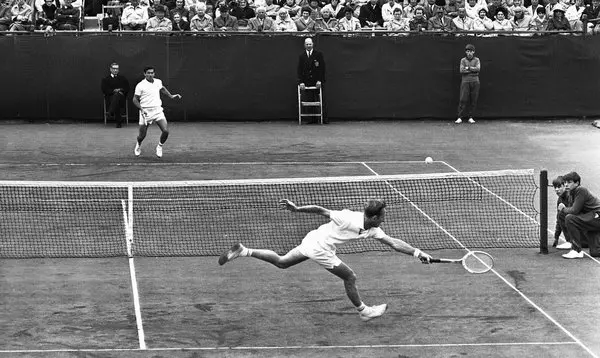
A new generation of superstars—Billie Jean King, Arthur Ashe,
Chris Evert, Jimmy Connors, Björn Borg, Martina Navratilova,
John McEnroe—introduced tennis to fresh audiences.
In 1972, men formed the Association of Tennis Professionals (ATP),
while women, led by Billie Jean King, established the Women’s Tennis
Association (WTA), proving they played as skillfully as men.
King’s victory over Bobby Riggs in the “Battle of the Sexes” cemented
tennis’s modern evolution.
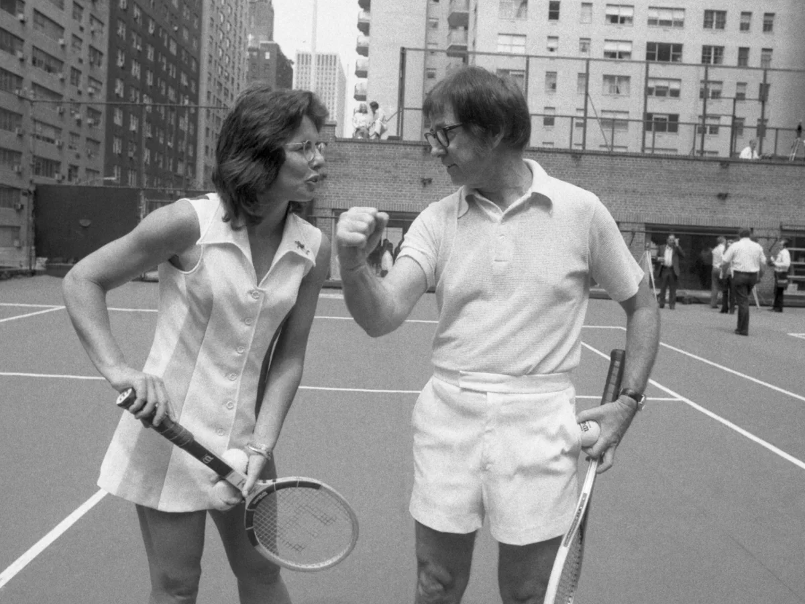
The Modern Era of Tennis
Television coverage expanded. Courts gained retractable roofs,
and player conduct became less tied to old traditions.
Advances in racket technology, nutrition, and training elevated
professional tennis to new heights.
Today, men and women compete for equal prize money in major
tournaments, and electronic line-calling enhances the game’s
precision and excitement for fans.
Tennis, like the rest of us, endured the pandemic, with matches
played in empty arenas as millions watched from home.
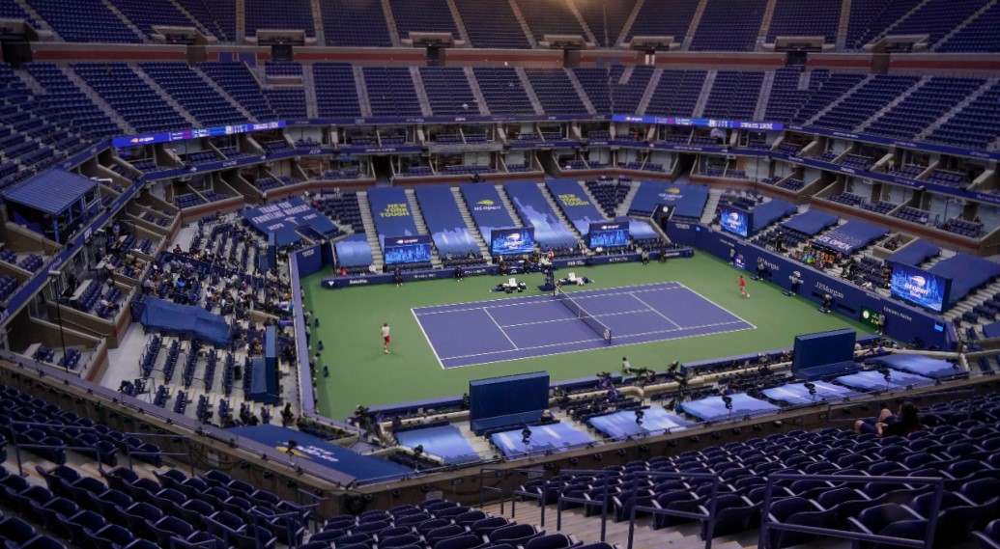
In recent years, the sport has been blessed with an extraordinary
generation of players led by Roger Federer, Rafael Nadal, Novak
Djokovic, Venus and Serena Williams, and many others.
Together, they’ve made tennis one of the most popular sports worldwide.
Yet, despite its rapid progress, tennis remains rooted in tradition.
Players, as they did 150 years ago, show mutual respect: warming up on
opposite sides of the net, apologizing for net-cord shots, and shaking
hands after the final words: “Game, set, match”.
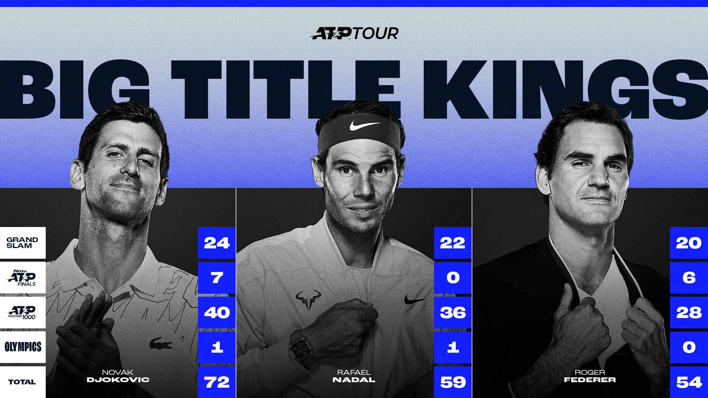